Portofolio WRS
Rekam jejak WRS sebagai Event Organizer dan Promotion Service di mal-mal Indonesia, dari pameran otomotif sampai bazaar UMKM.
Layanan Event Organizer & Promotion
Dari pameran di mal sampai promosi produk, WRS membantu bisnis Anda bertemu pembeli secara langsung.
Pameran di mal
Pameran otomotif, multi produk, dan furniture di area publik mal. Kami mengatur penataan area dan alur pengunjung.
Promotion service
Promosi event dan produk Anda langsung kepada pengunjung mal, media komunikasi promosi yang menjangkau target market luas.
Sewa space dan booth
Pilih lokasi, tanggal, dan ukuran space di antara 107 mal mitra. Tim kami membantu memilihnya.
Bazaar dan UMKM
Counter dan kios terjangkau untuk fashion, F&B, aksesori, dan usaha kecil yang ingin mulai tampil di mal.
Dokumentasi event
Foto kegiatan kami tampilkan di website dan di kanal resmi WRS: YouTube, Instagram, dan TikTok.
Konsultasi strategi
Ceritakan produk dan target Anda. Konsultasi strategi dari tim WRS tanpa biaya.
Galeri portofolio
Dokumentasi pameran dan event WRS. Klik foto untuk memperbesar.
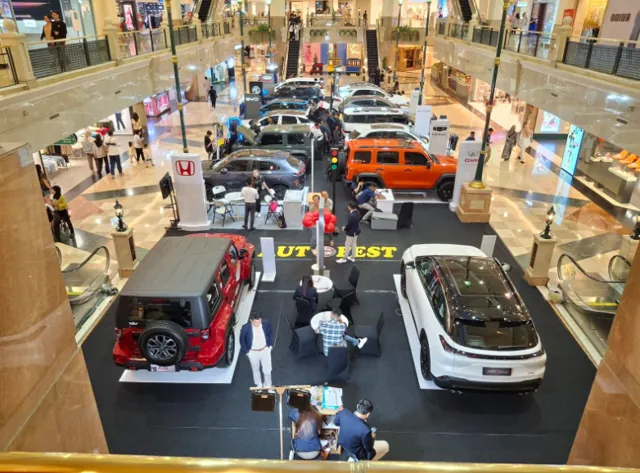
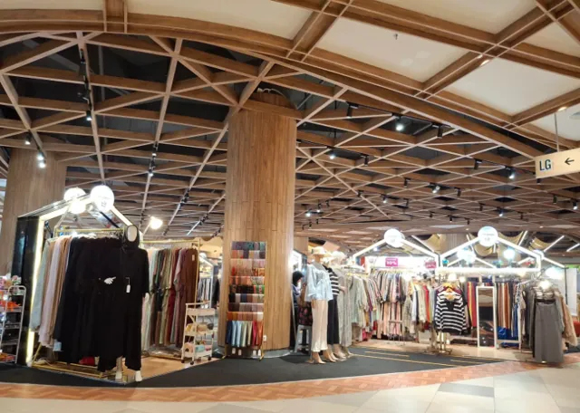
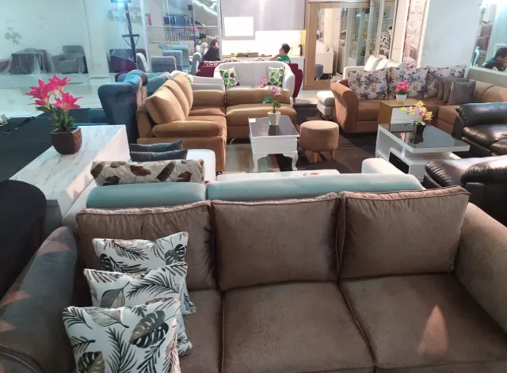
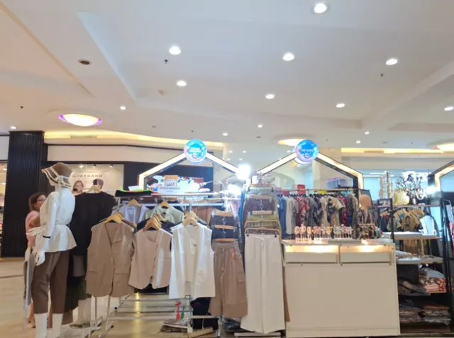
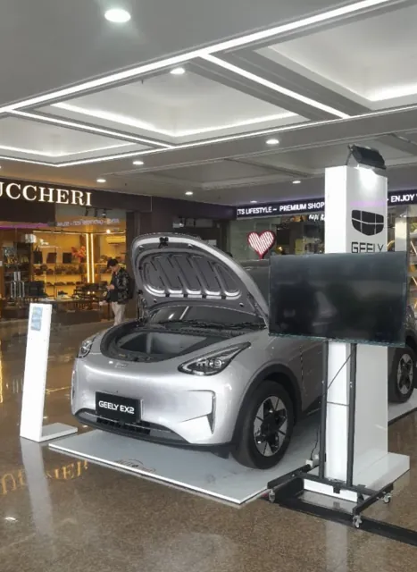
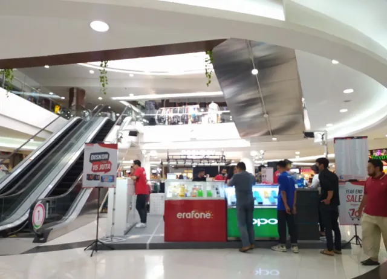
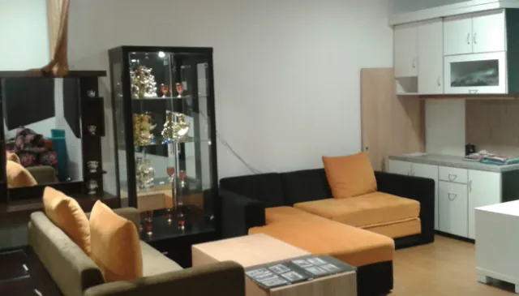
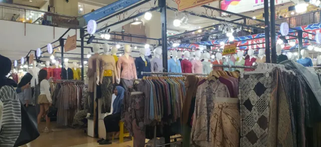
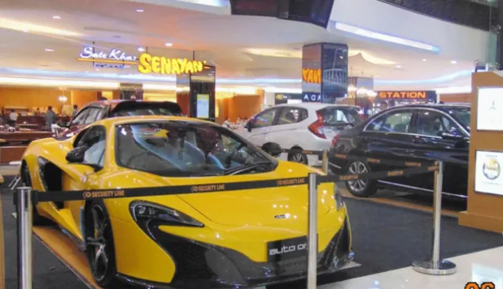
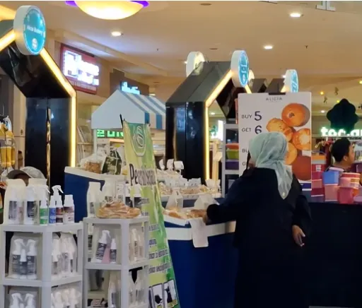
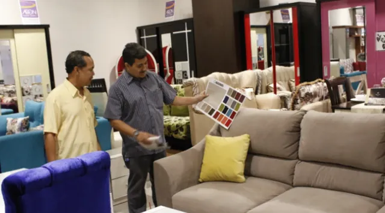
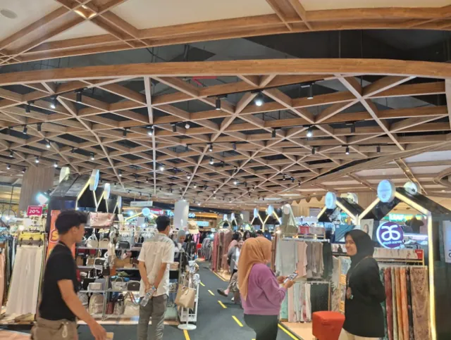
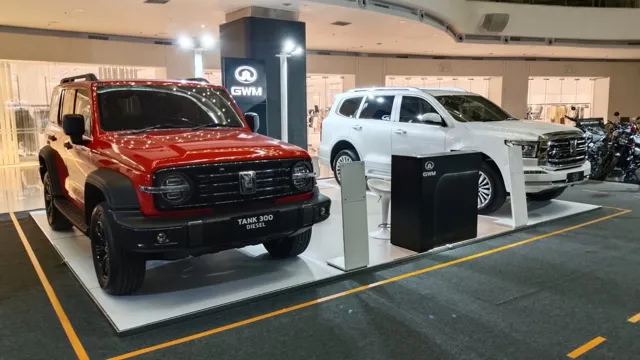
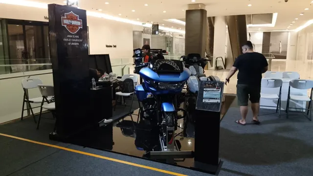
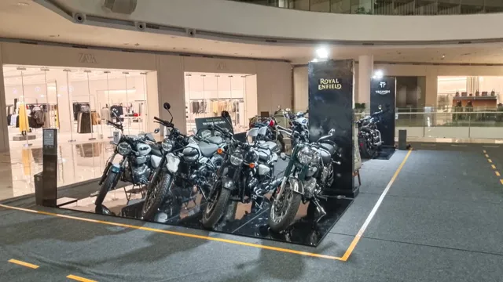
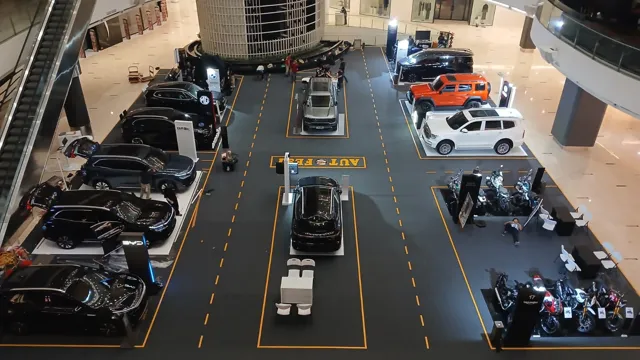
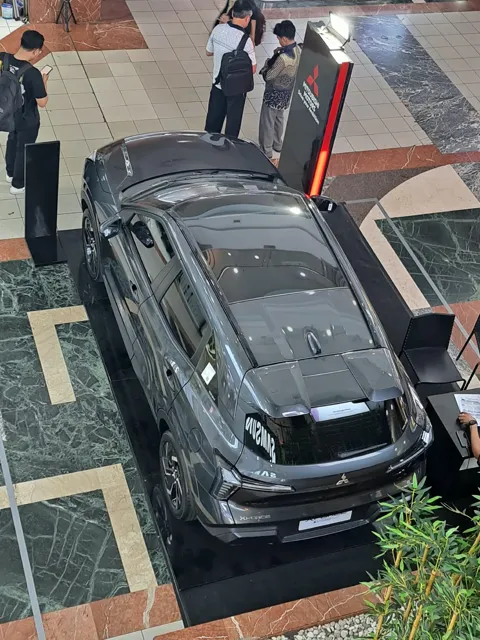
Update event terbaru
Pameran yang sedang dan baru berlangsung di mal mitra kami.
Lihat semua update event →Industri yang kami layani
Jejak lokasi WRS
Sebaran 107 mal mitra per wilayah.
Perjalanan WRS
Dari ruang usaha UMKM
Rizal Mulyana mulai menekuni bisnis dengan mengelola penyewaan ruang usaha bagi UMKM di ITC Mangga Dua, Jakarta.
WRS berdiri
PT. Wahana Rezeki Sempurna berkembang menjadi Exhibition Organizer dan penyedia jasa pameran serta promosi.
107 mal mitra
Pameran dan bazaar WRS hadir di Jabodetabek dan kota-kota besar di berbagai pulau, dengan dokumentasi yang rutin diperbarui.
Video terbaru WRS
Selalu menampilkan video terbaru dari kanal resmi YouTube WRS.
Siap tampil di mal?
Ceritakan kebutuhan Anda. Konsultasi strategi dari tim WRS tanpa biaya.